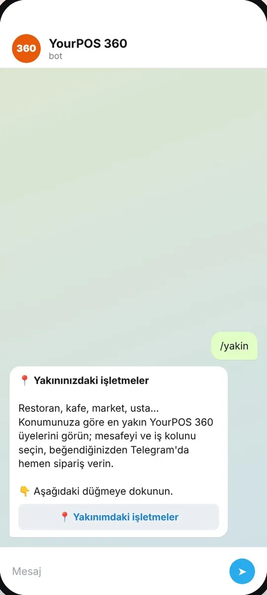

1Adım 1
İşletmeyi bulun
Sipariş vermek için işletmenin Telegram botunu açmanız yeterli. Üç yolu var:
- QR kodu okutun: işletmenin kapısındaki, camındaki ya da masasındaki QR kodu telefon kameranızla okutun. Açılan sayfada «Telegram'dan sipariş ver» ya da «Tarayıcıdan sipariş ver»i seçin.
- Bağlantıya dokunun: işletmenin Instagram biyografisindeki, WhatsApp durumundaki ya da size gönderdiği t.me/…_bot bağlantısına dokunun.
- Yakınımdaki işletmeler: Telegram'da @yourpos360_bot'u açın, /yakin yazın, «📍 Yakınımdaki işletmeler»e dokunun. Mesafeyi (2–100 km) ve türü seçin, «Şu an açık olanlar» ile süzün, beğendiğinizde «Sipariş ver» deyin.
💡 Konum izni vermek istemezsenizListenin üstündeki «İl seç» ile şehrinizi seçerek de işletmeleri görebilirsiniz.
